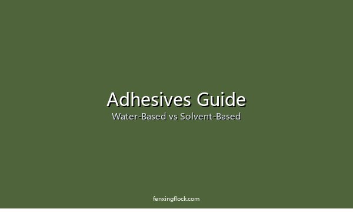

The adhesive is the foundation of any flocking job. Choose the wrong one and your fibers will fall off — no matter how good the flock is. This guide explains the two main families of flocking adhesive — water-based and solvent-based — and how to pick the right formulation for your substrate and production setup.

Water-Based vs Solvent-Based at a Glance
| Property | Water-Based | Solvent-Based |
|---|---|---|
| Environmental / VOC | Low VOC, eco-friendly | High VOC, strong odor |
| Drying Speed | Slower (needs heat or longer air dry) | Faster |
| Adhesion on Plastics/Metal | Weaker | Excellent |
| Water Resistance | Moderate | Excellent |
| Equipment Cleaning | Easy (water) | Needs solvent |
| Cost | Lower | Higher |
| Best For | Textiles, paper, wood | Plastics, rubber, metal |
Water-Based Adhesives
Best for: textiles, paper, wood, and eco-conscious buyers.
Water-based adhesives use water as the carrier instead of organic solvents. They're the fastest-growing category in flocking because they're safer for workers, lower in VOC emissions, and easier to clean up.
- Water-Based Acrylic: the workhorse for apparel, home textiles, and packaging. Air-dries at room temperature or cures faster with mild heat.
- Water-Based PU (Polyurethane): stronger and more flexible than acrylic, designed for leather and synthetic leather. Needs heat curing but delivers a soft, durable bond for shoes, bags, and automotive interiors.
- Trade-off: slower drying and weaker adhesion on non-porous surfaces like plastics and metal.
Solvent-Based Adhesives
Best for: plastics, rubber, metal, and demanding industrial applications.
Solvent-based adhesives dissolve the resin in an organic solvent, which gives them superior penetration and adhesion on difficult substrates. They cure fast and resist water and chemicals better than water-based systems.
- Solvent-Based PU: the go-to for industrial parts and EPDM rubber seals (like automotive window channels). Bonds firmly to rubber, metal, and engineering plastics.
- Solvent-Based Acrylic: good for PVC, ABS, and treated polypropylene (PP) — common in toys, electronics, and display items.
- Trade-off: higher VOC, strong odor, and requires solvent for equipment cleaning. Check local environmental regulations before choosing.
How to Choose: By Substrate
| Your Substrate | Recommended Adhesive |
|---|---|
| Textiles, fabric, paper, wood | Water-Based Acrylic |
| Leather, synthetic leather | Water-Based PU |
| Rubber, EPDM, metal | Solvent-Based PU |
| PVC, ABS, PP (treated) | Solvent-Based Acrylic |
| Need eco-friendly / low VOC | Water-Based (any) |
| High moisture / outdoor exposure | Solvent-Based PU |
Don't Forget the Curing Step
Adhesive choice and curing go hand in hand. Water-based acrylics typically air-dry in 2–4 hours or cure in 3–5 minutes at 80–120°C. Solvent-based PUs usually need 120–160°C for 5–10 minutes to reach full bond strength. Make sure your oven or heating setup can reach the temperature your adhesive needs.
Still Unsure Which Adhesive to Use?
Tell us what you're flocking onto (the substrate) and how you cure — we'll recommend the right formulation, with samples to test on your line. Contact us here.
Frequently Asked Questions
- Which adhesive is more eco-friendly?
- Water-based adhesives. They have low VOC emissions and are safer for workers, which is why they're increasingly required for exports to Europe and North America.
- Can I use water-based adhesive on plastic?
- Generally not recommended. Water-based adhesives struggle to bond to non-porous plastics like PVC, ABS, and PP. Use a solvent-based system (or a specially treated surface) for plastics.
- Why is my flocking peeling off?
- Peeling usually means one of three things: the wrong adhesive for your substrate, insufficient curing time/temperature, or the adhesive film was applied too thin. Check all three before changing your fiber.
- What's the MOQ for flocking adhesive?
- Typical MOQ is around 20 kg, with packaging available in 5 kg, 20 kg, and 200 kg drums. Trial quantities are usually available for new buyers.